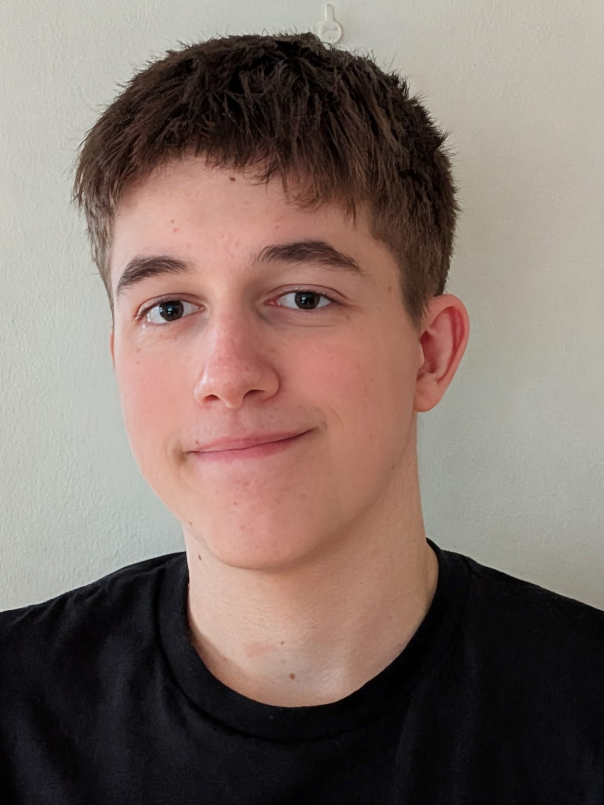

Daníel Snær Rodríguez
Gagnagrunns- og hugbúnaðarforritari
Ég er vinnusamur og duglegur maður með mikinn áhuga á tölvum. Ég er mjög fróðleiksfús, ábyrgur, lausnamiðaður og vinn sjálfstætt.
Hér má finna yfirlit yfir verkefnin mín og leiðir til að hafa samband.